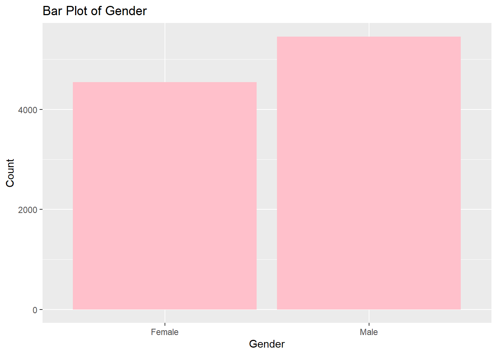

In the competitive banking industry, retaining customers is crucial for success. This project, “Customer Churn Prediction,” aims to predict and address customer churn effectively using data science and machine learning.
We use the Bank Customer Churn Dataset from Kaggle, preprocess it to handle missing data. Exploratory Data Analysis helps us understand data patterns, and we build predictive models like logistic regression, decision trees, and random forests. Model selection is based on metrics like accuracy, precision, recall, and F1-score.
Expected outcomes include a predictive model for identifying high-risk customers, insights into churn factors, and retention strategy recommendations. These insights will improve customer satisfaction, loyalty, cost efficiency, and competitive advantage for ABC Bank.
In conclusion, this project leverages data science to transform ABC Bank’s customer retention strategies and foster a data-driven culture for a more loyal customer base.
Introduction:
In today’s fast-paced banking sector, customer retention emerges as a critical factor for the sustained success and growth of financial institutions. ABC Bank, recognizing the importance of maintaining a loyal customer base, has embarked on a strategic project focusing on the prediction of customer churn. This initiative is driven by the need to understand and mitigate the factors leading to customer attrition, a phenomenon that not only affects revenue but also impacts the bank’s long-term market positioning and reputation.
The core objective of this project is to develop a robust predictive model using advanced data science techniques, which will enable ABC Bank to identify at-risk customers proactively. By leveraging historical data, including transaction patterns, account activities, and customer demographics, the model aims to uncover hidden patterns and indicators of potential churn. The insights gained from this analysis will provide ABC Bank with the tools to design effective retention strategies, tailor customer experiences, and improve overall satisfaction.
This initiative marks a pivotal step for ABC Bank in transforming its approach to customer relationship management. By embracing a data-driven strategy, the bank seeks not only to reduce churn rates but also to foster stronger, more enduring relationships with its customers. The project aligns with the bank’s commitment to excellence in service and innovation in banking solutions, setting a new standard in customer retention and loyalty.
Data Description:
The dataset used for this project is sourced from Kaggle: Bank Customer Churn Dataset. It consists of various customer attributes and a target variable indicating customer churn.
Customer_id: Unique Identifier for a customer.(Primary key)
credit_score: A score based on their credit card utilization, it is a continuous variable ranging between 0 - 850.
Country: The country in which the customer belongs to, it is a categorical variable having 3 values, Germany, France and Spain.
Gender: Gender of the customer, it is categorical having 2 values Male/Female.
Age: The age of the customer, real valued, greater than 0.
Tenure: Number of years the customer has been with the bank, Discrete variable.
Balance: The amount present in customers bank account, continuous varaible.
products_number: The number of products the customer has with the bank, eg: Credit Card, debit card. It is a discrete variable.
credit_card: It is a binary variable indicating whether the customer has a credit card or not.
active_member: It is a binary variable indicating whether the customer has been actively using the banking servies provided by the bank.
estimated_salary: The estimated salary of the customer, it is a continuous variable.
churn: It is the dependent variable, 1 indicating if the customer leaves the bank, 0 if not.
Goal
The goal of the project is to develop a predictive model for ABC Bank that accurately identifies customers at risk of churning, with a strong emphasis on optimizing recall and accuracy. The model aims to minimize false negatives (recall) to capture the maximum number of potential churners, while maintaining high overall accuracy to ensure targeted and effective customer retention strategies.
This approach will enable ABC Bank to proactively address and retain at-risk customers, thereby improving retention rates and gaining insights into customer loyalty and satisfaction factors. The focus on both recall and accuracy ensures a balanced and efficient approach to customer retention efforts.
Exploratory data analysis
For the ABC Bank customer churn prediction project, a comprehensive exploratory data analysis (EDA) is conducted to understand the characteristics and distribution of the data. This phase is crucial to ensure the quality and reliability of the data before feeding it into the predictive model.
Dimensionality Check:
The dimensions of the dataset are examined to understand the scale and scope of the data. This includes the number of records and features, which is essential for assessing the computational load and the complexity of the modeling process.
dim(bank_data)
[1] 10000 12
The data has 10K records with 11 independent features and 1 response variable.
Data Cleaning and Preprocessing:
Dropping Irrelevant Features: The ‘customer_id’ column is dropped from the dataset. As IDs are unique to each customer and do not contribute to the predictive power of the model, their removal is necessary to streamline the dataset.
Null Value Analysis: We check for null values across the dataset to identify any gaps in the data. The presence of null values can significantly impact the model’s performance and must be addressed appropriately.
We can see that the data is pretty clean with no null values in any of the columns.
Distribution Analysis:
Continuous Variables: For variables like age, balance, Credit Score etc., we use histograms and boxplots to visualize their distribution. This helps in identifying any skewness, outliers, or unusual patterns in the data.
par(mfrow =c(2, 2))hist(bank_data$balance, main ="Histogram of Balance", xlab ="Balance", ylab ="Frequency")hist(bank_data$credit_score, main ="Histogram of Credit Score", xlab ="Credit Score", ylab ="Frequency")hist(bank_data$estimated_salary, main ="Histogram of Estimated Salary", xlab ="Estimated Salary", ylab ="Frequency")hist(bank_data$age, main ="Histogram of Age", xlab ="Age", ylab ="Frequency")
The histograms for balance and age suggest right-skewed distributions, as most of the data is concentrated on the left side, with the tail extending to the right. For the credit score, the distribution appears to be more symmetrical around the median, suggesting a normal-like distribution. The estimated salary histogram shows a uniform distribution with roughly equal frequency across the salary range.
Categorical Variables: Variables including country of residence and gender are examined utilizing frequency tables and bar plots to assess their distribution. This approach assists in discerning the spread and prevalence of distinct categories, such as the proportion of customers from Germany, France, and Spain, or the ratio of male to female customers.
library(ggplot2)# Frequency tablescountry_frequency <-table(bank_data$country)gender_frequency <-table(bank_data$gender)# Bar plots# For Countryggplot(bank_data, aes(x=country)) +geom_bar(fill="steelblue") +labs(title="Bar Plot of Country", x="Country", y="Count")
# For Genderggplot(bank_data, aes(x=gender)) +geom_bar(fill="pink") +labs(title="Bar Plot of Gender", x="Gender", y="Count")

We infer that the bank’s customer base has a higher number of male customers than female customers. Additionally, France constitutes the largest customer segment among the three countries analyzed, with Germany and Spain having a similar but smaller number of customer.
These insights are valuable for strategic business decisions. For example, marketing campaigns could be tailored according to the predominant gender, or customer retention strategies could be adjusted to address the differences in customer distribution across countries
Response Variable Proportion Check:
The proportions of the response variable (churned vs. non-churned customers) are checked. An imbalanced dataset might require special techniques like oversampling, undersampling, or advanced algorithms to ensure the model does not become biased towards the majority class.
table(bank_data$churn)/nrow(bank_data)
0 1
0.7963 0.2037
We can see that 20% of the data points turns out to be churns, 80% are retained customers.
Pre-Processing and Train-Test Split
First we converted all the categorical variables into factor variables.
Then, we split the data into training and testing data sets in the ration 80:20 to evaluate the model performance on unseen data.
Lets check whether the proportions of the two levels of the response churn are approximately the same in the train, test, and the entire data.
Response variable proportion after split.
Response
Entire Data
Train
Test
Churn(1)
79.63
79.63
79.61
Retain(0)
20.37
20.37
20.39
We can see that the proportions of the two levels of the response variables are approximately same in the train, test and entire data set.
Evaluation Metrics
The performance of the classification model can be measured by accuracy, precision, recall, F1-Score, and AUC. To evaluate the performance, a confusion matrix model could be used to compute the efficiency of a classification model on group test data with known true values.
Predicted-Churn
Predicted-Non-Churn
Actual-Churn
TP
FN
Actual-Non-Chirn
FP
TN
The accuracy is the percentage of correct prediction.
\[
Accuracy = \frac{TP+TN}{TP+FP+TN+FN}
\]
Precision measures the number of accurately identified churns and overall positive predictions.
\[
Precision=\frac{TP}{TP+FP}
\]
Recall is correctly predicted true churners as a proportion of total churners
\[
Recall=\frac{TP}{TP+FN}
\]
F1-Score is a composite measure of recall and precision
In the initial stage of our analytical process, we constructed a null logistic regression model using only an intercept, without any explanatory variables.
The null model’s residual deviance stands at 8085.7 with an Akaike Information Criterion (AIC) of 8087.7.
Full Logit Model
We advanced our analysis by developing a comprehensive logistic regression model that included a full set of predictor variables. This enhanced model demonstrated a notable improvement over the baseline model, reflected by a lower residual deviance of 6897.4 and an Akaike Information Criterion (AIC) of 6921.4.
Performance:
The performance of the complete model was assessed on the test with the help of a confusion matrix, which is a tabular representation that delineates the efficacy of a classification algorithm.
Using the confusion matrix, we were able to determine the full model’s accuracy, which represents the ratio of correctly predicted instances to the overall number of predictions. The model displayed an accuracy rate of approximately 81.95%, indicating that it was able to correctly predict customer churn in roughly 82 out of every 100 cases.
Predicted No
Predicted Yes
Actual No
1547
46
Actual Yes
315
93
Stepwise Variable Selection
After applying varaible selection from both sides, we ended up removing 3 predictors from the model namely estimated_salary, credit_card and tenure.
To enhance our model’s efficiency, we applied a stepwise selection process to distill the predictor variables, focusing on their statistical relevance and their overall impact on the model’s performance. This refined approach resulted in a more streamlined model with a residual deviance of 6900 and an Akaike Information Criterion (AIC) of 6918.7.
The AIC is 6918.7 which is slightly different(3units less) from the full model, but the residual deviance has slightly increased(by 3 units).
But, if we look at the BIC of both the models, the model with variable selection has lower BIC compared to full model, again its slightly different(20 units less).
Reduced Logit Model Performance
The accuracy of the reduced logistic model is approximately 82.01%, which means that the model correctly predicted whether a customer would churn in about 82 out of every 100 cases.
Predicted No
Predicted Yes
Actual No
1547
46
Actual Yes
314
94
The accuracy has slightly increased compared to the full model, but this is a negligible change.
The stepwise model shows a slightly higher number of true positives and a slightly lower number of false negatives, which can be seen as a marginal improvement in predictive performance.
Probit Regression for Binary Responses
The probit link function is an alternative link function.
The probit model slightly has higher AIC and higher residual deviance comapred to the reduced logit model by 2 units in both the metrics.
As the difference is negligible, lets check the probit models performance on the test data.
Predicted No
Predicted Yes
Actual No
1552
41
Actual Yes
323
85
Accuracy (Approximately 81.81%): This tells us that overall, the model correctly predicts whether a customer will churn or not about 82% of the time.
Precision (Approximately 67.46%): When the model predicts that a customer is going to churn, it is correct about two-thirds of the time.
Recall (Approximately 20.83%): The model only correctly identifies about 21% of the customers who will actually churn. This low recall rate means that many customers who are likely to churn are not being flagged by the model, which could lead to a significant loss of customers if they are not addressed.
F1 Score (Approximately 0.318): This low score indicates that the model has a poor balance between precision and recall. It is not very effective at identifying customers who will churn (low recall), even though when it does predict churn, it is reasonably precise.
Decision Trees:
A binary tree is constructed by repeatedly by splitting a node into two child nodes. The split is made based on the predictor (feature) which results in the largest possible reduction in heterogeneity of the binary response variable.
Impurity measure:
\[
\mbox{Gini index} = 1 - \sum_{j=1}^J p^2_j,
\]
The initial misclassification rate of the decision tree, represented by the root node error, was approximately 20.365%, which is the proportion of incorrect predictions before the tree made any splits. To control the tree’s growth and mitigate the risk of overfitting, the complexity parameter (CP) was set to a threshold of 0.001.
Decision Tree Model Performance
Predicted No
Predicted Yes
Actual No
1517
76
Actual Yes
185
223
The accuracy of the model, which indicates the overall correct predictions, is 86.957%. This means that the model correctly predicts the churn status for approximately 87 out of 100 customers.
The precision for class 1, or the ‘predicted yes’ class, is 0.7458, indicating that when the model predicts a customer will churn, it is correct about 74.58% of the time.
The recall for the actual class 1 is 0.5466, suggesting that the model correctly identifies 54.66% of the customers who actually churn.
The F1 score, which balances precision and recall, is 0.6308, providing a single measure of the model’s accuracy when the class distribution is imbalanced.
Prunning the Decision Tree
Pruning a decision tree means simplifying it by removing unnecessary parts. This prevents it from being too complex and helps it work better with new data. We can cut off less important branches or set rules for when to stop splitting.
Predicted No
Predicted Yes
Actual No
1547
46
Actual Yes
206
202
The Accuracy has slightly increased from 86.9 in full tree to 87.4 in pruned tree.
The Precision significantly increased from 74% in full tree to 81% in pruned tree.
But, the Recall has reduced from 54% in full tree to 49% in pruned tree.
Recall is also been reduced from 63% to 61.4%.
The pruned model seems to perform better in terms of accuracy and precision, which could make it preferable if the prediction task values the correctness of positive predictions over the ability to identify all positive instances.
The full decision tree model, despite being less precise, is better at capturing more of the positive instances (higher recall, it would be the preferred choice as the primary objective is to capture as many true churn cases as possible.
RandomForest classifier
We utilized the ranger package in R to construct a Random Forest model. This approach is renowned for its high accuracy and resilience, making it a valuable tool for assessing the likelihood of customers leaving a service or product. The process involves training the model by generating multiple decision trees and then using their collective insight to make predictions regarding customer churn.
Model Parameters:
Number of Trees: The model has been trained with 500 trees, which means it aggregates the decisions of 500 individual decision trees.
Sample Size: It used 7999 samples for training, providing a substantial dataset for the trees to learn from.
Number of Independent Variables (Mtry): At each split in the decision trees, 3 variables were considered. This is a form of random subspace method that helps in reducing variance and improving model performance.
Minimum Node Size: The model allows splitting down to a single sample in a node, aiming for very detailed and fine-grained predictions.
Variable Importance Mode: It uses ‘impurity’, likely referring to how much each variable decreases the impurity in the model, with the Gini index as a measure.
Evaluation of the model:
OOB Prediction Error: The Out-Of-Bag error, which is an estimate of prediction error, is 14.34%. This means that when the model predicts on new data, it is expected to be about 85.66% accurate, based on the samples not used in the training (bootstrap sample) of each tree.
Predicted No
Predicted Yes
Actual No
1545
48
Actual Yes
191
217
Accuracy isapproximately 88.06%, indicating that the model correctly predicted the outcome for 88.06% of the cases in the dataset.
Precision is approximately 81.89%, which means that when the model predicted a customer as churned, it was correct about 81.89% of the time.
Recall is a pproximately 53.19%, indicating that the model identified 53.19% of all actual churned cases correctly.
F1 Score is 64.5%, this metric balances the precision and recall and is particularly useful when the class distribution is imbalanced.
Xtreme Gradient Boosting
The XGBoost algorithm, known for its efficiency and effectiveness in handling classification and regression tasks, was utilized. Its performance was evaluated using the Area Under the Receiver Operating Characteristic Curve (AUC-ROC) metric across multiple iterations for both training and test sets. The AUC-ROC metric assesses a model’s ability to differentiate between the classes.
Key observations from the training process include:
The AUC on the training data began at 0.736432 and displayed a consistent upward trend, culminating at 0.867467 by the 10th iteration. This indicates progressive learning and improvement in the model’s ability to correctly classify the training data.
For the test data, the AUC started at 0.764130 and experienced variations throughout the iterations. It saw a high of 0.871254 by the 10th iteration, showing a general increasing trend but with some fluctuations across the iterations.
The trend of the training AUC steadily increasing suggests the model is continuously learning from the training data. However, the test AUC’s variability, particularly around values of 0.79 to 0.87, implies a risk of overfitting if training rounds continue to increase without corresponding improvements on the test set.
XGB Model Performance
Predicted No
Predicted Yes
Actual No
1521
72
Actual Yes
202
206
Accuracy (86.31%): This indicates that the model correctly identified whether a customer would churn or not about 86% of the time. It’s a general measure of the model’s overall performance but doesn’t specifically indicate how well the model identifies churned customers versus those who stay.
Precision (74.10%): Precision reflects the model’s ability to correctly identify true churn cases out of all cases it predicted as churn. In practical terms, when the model predicts a customer will churn, there’s a 74.10% chance it is correct.This is important for a business because it can help prioritize which customers to target with retention strategies.
Recall (50.49%): Recall measures the model’s ability to find all the actual churn cases. A recall of about 50.49% means the model correctly identifies half of the customers who will churn. For a business, this could indicate that the model is missing half of the customers at risk of churning, which could be costly if these customers are not engaged with retention efforts.
An F1 score of 0.600 suggests the model is moderately effective but not exceptional at predicting customer churn. It indicates there is room for improvement, especially in terms of recall, to ensure that more customers who are likely to churn are accurately identified.
For a business, these metrics would suggest that while the model is fairly good at predicting who will churn, it tends to miss a significant number of customers who do churn (as indicated by the recall).
This could be problematic if the cost of missing a customer who churns is high.
Results from the Analyses:
In this comprehensive analysis, we delve into the performance evaluation of four key machine learning models: Logistic Regression, Decision Trees, Gradient Boosting, and Random Forest. We gauge the effectiveness of these models in predicting customer churn by assessing critical metrics such as accuracy, precision, recall, and F1-score.
Logistic Regression
Performance Metrics:
Accuracy: 81.95%
Precision: 66.90%
Recall: 22.79%
F1-Score: 34.00%
Analysis: Logistic Regression served as a reasonable baseline. However, its limitation in handling non-linear relationships and interactions among variables led to lower recall rates.
Decision Trees
Performance Metrics:
Accuracy: 86.95%
Precision: 74.58%
Recall: 54.66%
F1-Score: 63.08%
Analysis: Decision Trees exhibited improved recall, indicating better identification of actual churn cases. Nevertheless, the model’s tendency to overfit resulted in lower precision.
Gradient Boosting
Performance Metrics:
Accuracy: 86.30%
Precision: 74.10%
Recall: 50.49%
F1-Score: 60.05%
Analysis: Gradient Boosting showed enhanced precision but slightly lower recall compared to Decision Trees. The model performed well but demanded more computational resources and tuning.
Random Forest
Performance Metrics:
Accuracy: 88.06%
Precision: 81.89%
Recall: 53.19%
F1-Score: 64.49%
Analysis: The Random Forest model excelled, striking the best balance between precision and recall. Its ensemble approach effectively handled the dataset’s intricacies and noise, resulting in higher overall accuracy and more reliable churn predictions.
Random Forest: The Preferred Model
After thorough analysis and comparison, the Random Forest model emerges as the optimal choice for several compelling reasons:
Accuracy and Precision: The Random Forest model achieved an impressive accuracy rate of 88.06%, demonstrating its proficiency in correctly classifying both churn and non-churn cases. Furthermore, it boasted a precision rate of 81.89%, signifying that a substantial proportion of the model’s churn predictions were accurate.
Precision-Recall Balance: While excelling in precision, the model also maintained a commendable recall rate of 53.19%. This equilibrium is pivotal in churn prediction, ensuring a high identification of actual churn cases while minimizing false positives.
Robustness and Stability: Random Forest’s ensemble nature, which aggregates results from multiple decision trees, mitigates overfitting risks often encountered in complex models. This robustness makes it an ideal choice for handling the diverse and intricate nature of customer data.
Insightful Feature Importance: A noteworthy advantage of the Random Forest model lies in its capability to rank feature importance. In our case, variables such as age, account balance, and credit score emerged as influential factors, offering valuable insights for strategic decision-making in customer retention initiatives.
Comparative Performance
Although Logistic Regression and Gradient Boosting models exhibited commendable performance, they fell short in either precision or recall when compared to the Random Forest model. The Decision Tree model, while offering slightly higher recall, lacked the precision and stability of Random Forest.
In conclusion, our analysis strongly advocates for the adoption of the Random Forest model for customer churn prediction. It not only delivers high accuracy and a balanced precision-recall trade-off but also provides indispensable insights into the factors influencing customer decisions to leave the bank. These insights can serve as a guiding light for ABC Bank’s strategic endeavors aimed at elevating customer retention and satisfaction.
Summary and Conclusion:
In our project, “Customer Churn Prediction” we harnessed the power of machine learning algorithms to forecast customer churn. Our analysis was conducted using the Bank Customer Churn Dataset sourced from Kaggle, which encompassed a variety of customer attributes. After meticulously preprocessing the data, we applied several models, including Logistic Regression, Decision Trees, Gradient Boosting, and Random Forest, for our predictions. Our assessment criteria included accuracy, precision, recall, and F1-score.
The Random Forest model emerged as the standout performer, achieving an accuracy of 88.06%, a precision rate of 81.89%, a recall rate of 53.19%, and an F1-score of 64.49%. Notably, this model not only delivered the highest accuracy but also exhibited a robust balance between precision and recall. It effectively managed the intricacies and noise within the data, rendering it the most dependable choice for our churn prediction objectives.
Insights Gained
Our analysis uncovered several pivotal insights:
Influential Predictors: Factors such as age, account balance, and credit score emerged as influential predictors of churn. Grasping the significance of these variables can guide the formulation of targeted customer retention strategies.
Model Robustness: The ensemble approach adopted by the Random Forest model, which aggregates multiple decision trees, effectively mitigated the risk of overfitting—a common challenge in predictive modeling.
Strategic Recommendations: Leveraging the insights from our model, ABC Bank can craft data-driven strategies aimed at enhancing customer engagement and curtailing churn rates.
Conclusions
The superior performance of the Random Forest model in our study underscores the transformative potential of machine learning in reshaping customer retention strategies within the banking industry. By accurately pinpointing high-risk customers and shedding light on churn-inducing factors, our model equips ABC Bank with the tools to take proactive steps in bolstering customer satisfaction and loyalty.
Furthermore, our project underscores the pivotal role of a data-driven approach in shaping decision-making processes. The predictive model not only serves as a churn prediction tool but also serves as a catalyst for instilling a culture of data-driven strategy development within the organization.